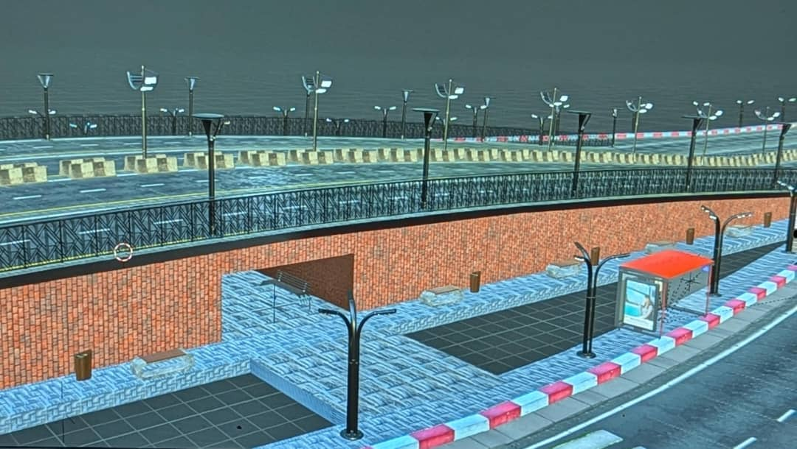
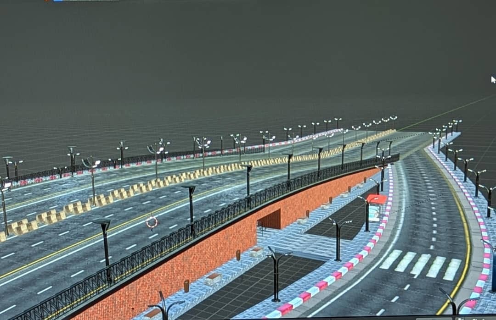
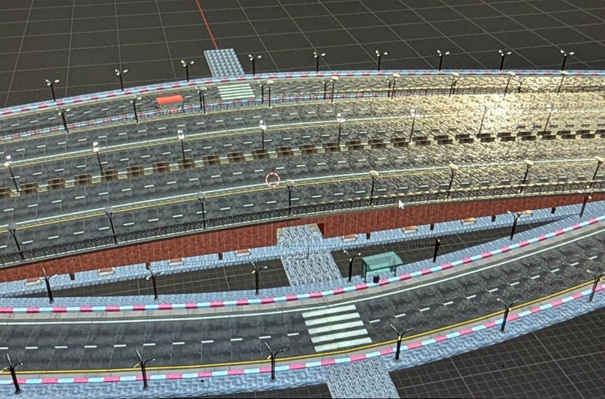
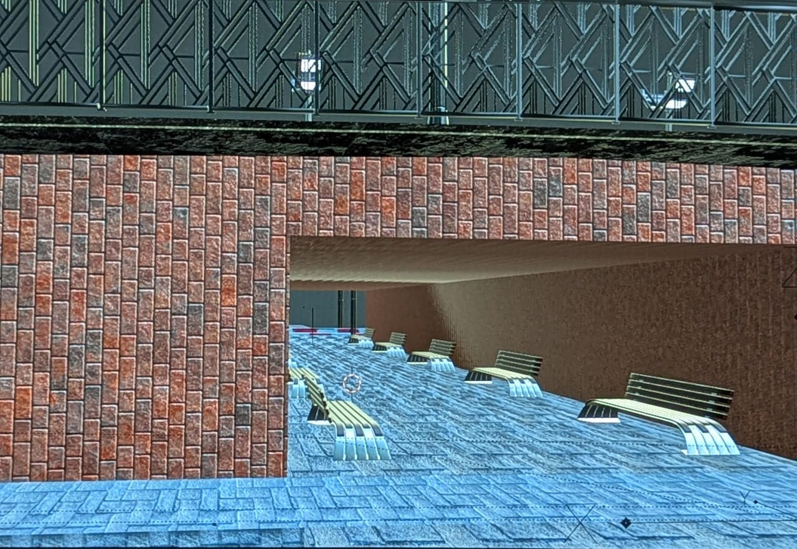
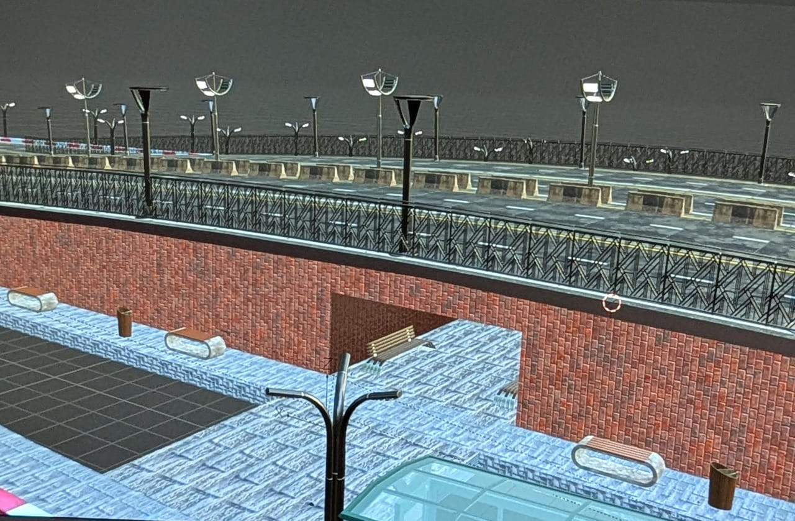
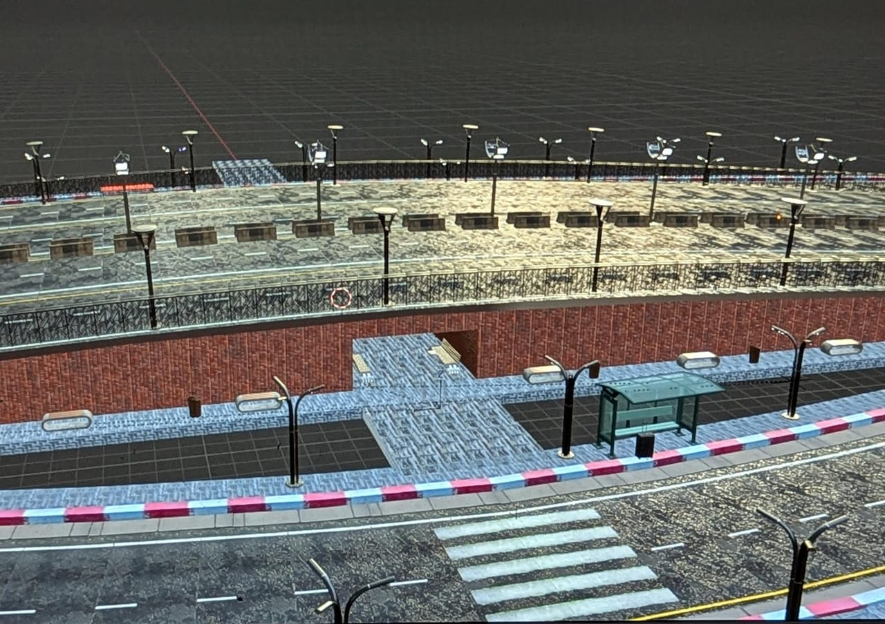
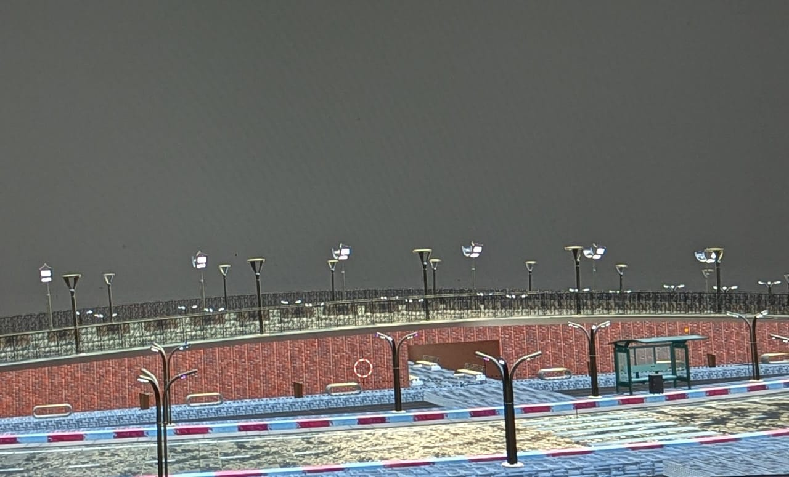

Wassim El Madina Bridge
This innovative design aims to make highway and road crossings safer and easier for Algerian citizens—especially elderly people, children, and individuals with disabilities. The system can be dynamically customized to adapt to different environments, ensuring accessibility and efficiency everywhere. Additionally, the company provides full maintenance coverage in case of malfunction or technical issues.
Primitive 3D Prototype
This model represents an early-stage 3D prototype developed to visualize the structural concept, proportions, and spatial configuration before final engineering.
The system can be customized to adapt to different environments, ensuring efficiency and ease of access.
Gallery from Real-World Simulation of the Design







Our Project Goals
- Improve pedestrian safety and accessibility
- Adapt to different urban and rural environments
- Reduce accident risks in high-traffic areas
- Provide a scalable and maintainable infrastructure solution